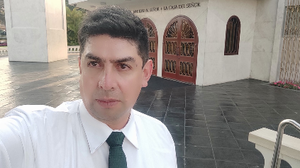

Ángel Cornejo | WDD130
My name is Miguel Ángel Cornejo, I am from Cusco Peru. I love learning new things especially related to technology, I love music, movies and chess.
I love helping in missionary work on both sides of the veil. Here excited for this being the first time I'm personally going to create my own website.